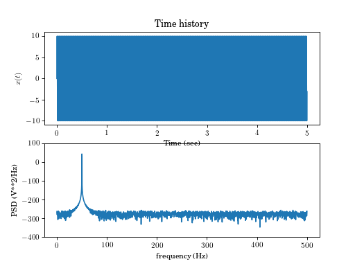
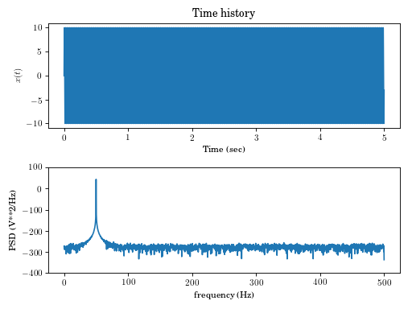
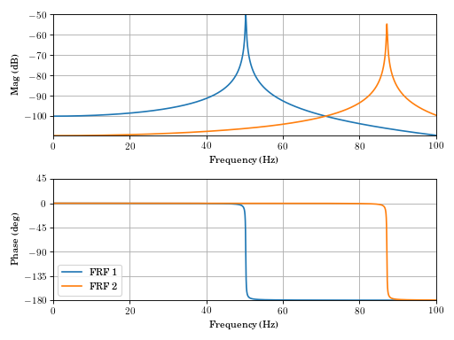
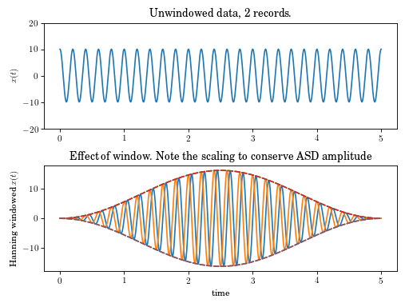
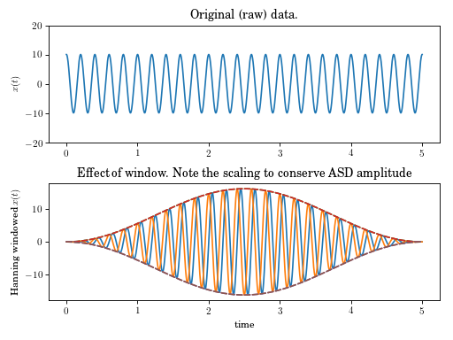

Signal Processing and Generation (signals)¶
Signal processing and creation for processing vibration testing data and generating simulated experiments.
-
signals.asd(x, t, windowname='hanning', ave=True)[source]¶ Return autospectrum (power spectrum) density of a signal x
Parameters: x : float array
Data array (n x N x m) where n is the number of sensors, m the number of experiments.
t : float array
Time array (1 x N)
windowname : string
Name of windowing function to use. See window.
ave : bool, optional(True)
Average result or not?
Returns: f : float array
Frequency vector (1 x N)
Pxx : float array
Autospectrum (n x N) or (n x N x m) if not averaged.
Examples
(Source code, png, hires.png, pdf)

{kind=link}
{kind=link}
-
signals.blackwin(x)[source]¶ Return the n point Blackman window
Returns x as the Blackman windowing array x_window The windowed signal is then x*x_window
-
signals.boxwin(x)[source]¶ Return the n point box window (uniform)
Returns x as the boxwin windowing array x_windowed The windowed signal is then x*x_window
-
signals.crsd(x, y, t, windowname='hanning', ave=True)[source]¶ Calculate the cross spectrum (power spectrum) density between two signals.
Parameters: x, y : arrays
Data array (n x N x m) where n is the number of sensors, m the number of experiments.
t : array
Time array (1 x N)
windowname : string
Name of windowing function to use
ave : bool, optional
Average result or not?
Returns: f : array
Frequency vector (1 x N)
Pxy : array
Autospectrum (n x N) or (n x N x m) if not averaged.
Examples
(Source code, png, hires.png, pdf)

{kind=link}
{kind=link}
-
signals.expwin(x, ts=0.75)[source]¶ Return the n point exponential window
Returns x as the expwin windowing array x_windowed The windowed signal is then x*x_window The optional second argument set the 5% “settling time” of the window. Default is ts=0.75
-
signals.flatwin(x)[source]¶ Return the n point flat top window
x_windows=flatwin(x) Returns x as the flat top windowing array x_windowed The windowed signal is then x*x_window McConnell, K. G., “Vibration Testing: Theory and Practice,” Wiley, 1995.
-
signals.frfest(x, f, dt, windowname='hanning', ave=True, Hv=False)[source]¶ Returns freq, H1, H2, coh, Hv
Estimates the \(H(j\omega)\) Frequency Response Functions (FRFs) between \(x\) and \(f\).
Parameters: x : float array
output or response of system
f : float array
input to system
dt : float
time step of samples
windowname : string - locked to Hanning
name of leakage window to use
ave : bool, optional(True)- currently locked
whether or not to average PSDs and ASDs or calculate raw FRFs
Hv : bool, optional(False)
calculate the \(H_v\) frequency response function
Returns: freq : float array
frequency vector (1xN)
H1 : float array
Frequency Response Function \(H_1\) estimate, (nxN) or (nxNxm)
H2 : float array
Frequency Response Function \(H_2\) estimate, (nxN) or (nxNxm)
coh : float array
Coherance Function \(\gamma^2\) estimate, (nxN)
Hv : float array
Frequency Response Function \(H_v\) estimate, (nxN) or (nxNxm)
Currently
windownameandaveare locked to default values.Notes
4/13/15: Converted to Python .. note:: Not compatible with scipy.signal functions .. seealso::
asd(),crsd(),frfplot(). .. warning:: hanning window cannot be selected yet. Averaging cannot be unslected yet. .. todo:: Fix averaging, windowing, multiple input.Examples
{kind=link}
{kind=link}
{kind=link}
{kind=link}
-
signals.frfplot(freq, H, freq_min=0, freq_max=None, type=1, legend=[])[source]¶ Frequency Response function pretty plotting.
Plots frequency response functions in a variety of formats
Parameters: freq : float array
Frequency vector (rad/sec), (1xN)
H : float array
Frequency response functions (nxN)
freq_min : float, optional
Low frequency for plot (default 0)
freq_min : float, optional
High frequency for plot (default max frequency)
legend : string array
Array of string for use in legend.
type : int, optional
Plot type. See notes.
Notes
type Plot style 1 (def) Magnitude and Phase versus F 2 Magnitude and Phase versus log10(F) 3 Bodelog (Magnitude and Phase versus log10(w)) 4 Real and Imaginary 5 Nyquist (Imaginary versus Real) 6 Magnitude versus F 7 Phase versus F 8 Real versus F 9 Imaginary versus F 10 Magnitude versus log10(F) 11 Phase versus log10(F) 12 Real versus log10(F) 13 Imaginary versus log10(F) 14 Magnitude versus log10(w) 15 Phase versus log10(w) See also
frfest
Copyright J. Slater, Dec 17, 1994 Updated April 27, 1995 Ported to Python, July 1, 2015
Examples
(Source code, png, hires.png, pdf)

{kind=link}
{kind=link}
-
signals.hammer_impulse(time, imp_time=None, imp_duration=None, doublehit=False, dh_delta=None)[source]¶ Generate simulated hammer hit (half sin)
Parameters: time : float array
1 x N time array. Suggest using np.linspace(0,10,1000).reshape(1,-1) for example
imp_time : float (optional)
Time of onset of impulse. Default is 0.1 time end time- which traditionally works well for impact testing
imp_duration : float (optional)
Duration of impulse. Default is 0.01 of total record
doublehit : Boolean (optional)
Allows repeat of hit to emulate a bad strike. Default is False
dh_delta : float (optional)
Time difference between primary strike and accidental second strike Default is 0.02 of record.
Returns: force : float array
Examples
>>> import vibrationtesting as vt >>> time = np.linspace(0,10,1024).reshape(1,-1) >>> force = vt.hammer_impulse(time, doublehit=True) >>> plt.plot(time.T, force.T) [<matplotlib.lines.Line2D object...
-
signals.hammwin(x)[source]¶ Return the n point hamming window
Returns x as the hamming windowingarray x_windowed The windowed signal is then x*x_window
-
signals.hanning(x, normalize=False)[source]¶ Returns hanning window
Create a hanning window of length \(x\), or a hanning window sized to match \(x\) that \(x\times w\) is the windowed result.
Parameters: x: integer, float array
If integer- number of points in desired hanning windows.If array- array provides size of window returned.windowname: string
One of: hanning, hamming, blackman, flatwin, boxwin
normalize: bool, optional(False)
Adjust power level (for use in ASD) to 1
Returns: w: float array
window array of size xwindow array. Windowed array is then \(x\times w\)Examples
(Source code, png, hires.png, pdf)

{kind=link}
{kind=link}
-
signals.window(x, windowname='hanning', normalize=False)[source]¶ Create leakage window
Create a window of length \(x\), or a window sized to match \(x\) that \(x\times w\) is the windowed result.
Parameters: x: integer, float array
If integer- number of points in desired hanning windows.If array- array provides size of window returned.windowname: string
One of: hanning, hamming, blackman, flatwin, boxwin
normalize: bool, optional(False)
Adjust power level (for use in ASD) to 1
Returns: w: float array
window array of size xwindow array. Windowed array is then \(x\times w\)Examples
(Source code, png, hires.png, pdf)

{kind=link}
{kind=link}